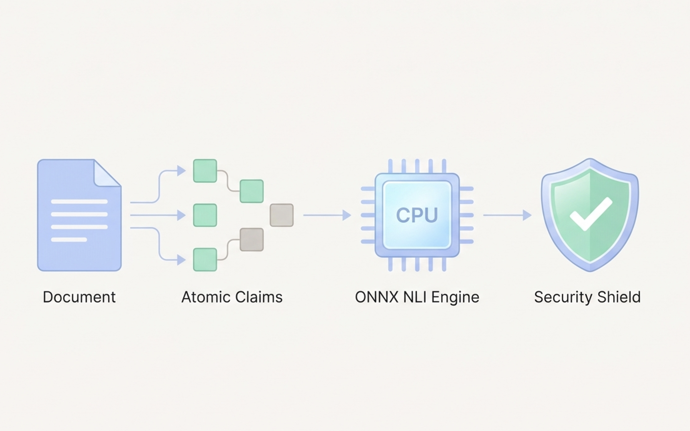
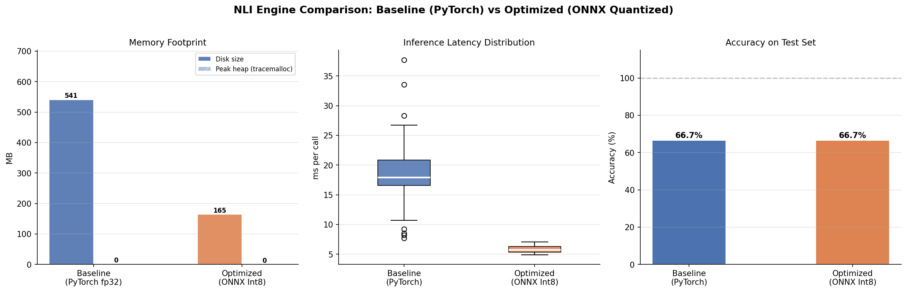
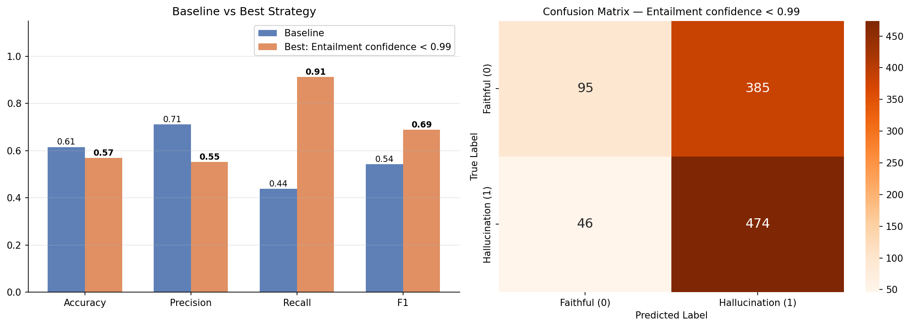

| Claim | Matched Context | NLI Label | Confidence |
|---|---|---|---|
| Acme Corp’s revenue grew by 200% in Q3. | …revenue grew by 20% compared to last year. | Contradiction | 0.9974 |
| The CEO, Jane Doe, attributed this to the AI software division. | …growth was primarily driven by their new AI software division. | Neutral | 0.9847 |
| The hardware division was led by John Smith. | …hardware division saw a 5% decline in sales. | Contradiction | 0.9994 |
Beyond LLM-as-a-Judge: CPU-Native Hallucination Detection with NLI
LLMs
RAG
ONNX
NLI
FastAPI
Hallucination Detection
A deep technical dive into RAG-Guard NLI. How I replaced slow, expensive LLM graders with an ONNX INT8-quantized DeBERTa Cross-Encoder to detect hallucinations at ~6 ms per claim on a standard CPU — with zero accuracy loss.

The standard solution for detecting hallucinations in a RAG pipeline is to use a second LLM as a judge: feed the original context and the generated answer to a powerful model and ask it, “Is this grounded?”
The problem? It is slow, expensive, and the judge itself can hallucinate. You are fighting fire with fire.
RAG-Guard NLI takes a fundamentally different approach. Instead of a second LLM, it uses a Cross-Encoder NLI model (DeBERTa-v3-small) to verify factual grounding at the claim level. By applying INT8 Dynamic Quantization and exporting to ONNX Runtime, the pipeline runs at ~6 ms per claim on a standard CPU — faster than most cloud API round-trips — with a 3.19× latency speedup and 70% model size reduction at zero accuracy cost.
The “LLM-as-a-Judge” Problem
The most common pattern for RAG evaluation today looks roughly like this: call GPT or Claude, give it the source document and the generated answer, and ask for a hallucination verdict. It works well enough in research settings, but it breaks down in production for three reasons.
1. Cost. Running a frontier LLM call for every single generated response is expensive at scale. A company processing thousands of RAG queries per day adds significant per-token overhead just for the evaluation layer.
2. Latency. An additional API round-trip adds hundreds of milliseconds. In a real-time or streaming application, that is unacceptable.
3. Recursion. The judge is itself an LLM, which means it can hallucinate its own verdict. You have not eliminated the problem — you have added an extra layer with the same failure mode.
What we actually need is a model that was trained specifically to reason about entailment — to classify whether a hypothesis is supported, contradicted, or unrelated to a given premise. That is exactly what Natural Language Inference (NLI) models do.
The NLI Approach: Atomic Claim Verification
Natural Language Inference is a supervised classification task. Given a premise (source document sentence) and a hypothesis (LLM-generated claim), the model outputs one of three labels:
- Entailment — the premise logically supports the hypothesis. The claim is grounded.
- Contradiction — the premise actively contradicts the hypothesis. This is a hallucination.
- Neutral — the premise neither supports nor refutes the hypothesis. The claim is unverifiable from the given source.
The key insight is to decompose the LLM’s response into atomic claims first, then verify each claim independently. A single fabricated number buried inside an otherwise-correct paragraph will not hide — every sentence gets its own verdict.
Why a Cross-Encoder, Not a Bi-Encoder?
This is the most important architectural decision in the system. There are two fundamentally different ways to compute a relationship score between two text sequences.
Bi-Encoder (like the MiniLM model used in the Semantic Router): - Encodes each sentence independently into a fixed-size dense vector; similarity is cosine distance between the two vectors. - Extremely fast — embeddings can be pre-computed and cached at ingestion time. - Critical limitation: the two sequences never see each other during encoding, so the model has no mechanism to reason about token-level interactions between the premise and the hypothesis.
Cross-Encoder (used for NLI inference):
- Concatenates both sequences and feeds the full joint input —
[CLS] premise [SEP] hypothesis [SEP]— into the transformer in a single forward pass. - Every attention head in every layer can attend across both sequences simultaneously, enabling direct token-level comparison (e.g. “grew by 20%” vs “grew by 200%”) with very high confidence.
- Tradeoff: cannot be pre-cached and scales as \(O(n \times m)\) with \(n\) claims and \(m\) source sentences — which is exactly why the Semantic Router stage exists, reducing \(m\) from the full document size down to top-k=2 sentences to keep it economically viable.
Why DeBERTa-v3?
cross-encoder/nli-deberta-v3-small is fine-tuned on the NLI task using Microsoft’s DeBERTa-v3 architecture. DeBERTa improves on standard BERT/RoBERTa in two ways that are critical for entailment detection.
1. Disentangled Attention:
- Standard transformers encode each token as a single vector that conflates content (what the token means) and position (where it appears in the sequence).
- DeBERTa disentangles these into two separate embedding matrices — a content vector \(H_i\) and a relative position vector \(P_{i|j}\) — computing attention scores using all four cross-interaction terms:
\[A_{i,j} = H_i W_q (H_j W_k)^T + H_i W_q (P_{i|j} W_k)^T + P_{i|j} W_q (H_j W_k)^T\]
- This makes DeBERTa far more sensitive to relative word order — critical for catching contradictions like “grew by 20%” vs “grew by 200%” where a single token difference changes the entailment label entirely.
2. Enhanced Mask Decoder (v3):
- Adopts the replaced token detection pre-training objective from ELECTRA rather than masked language modelling.
- The generator-discriminator setup produces substantially stronger contextual token representations for downstream fine-tuning.
NLI fine-tuning:
- A linear classification head is appended on top of the
[CLS]token representation. - Fine-tuned on SNLI, MultiNLI, and related corpora to output three logits mapped through softmax to probabilities over
{Contradiction, Entailment, Neutral}.
The Three-Stage Pipeline
The full RAG-Guard pipeline has three sequential stages, each solving a specific problem:
Generated Text + Source Document
│
▼
ClaimExtractor (spaCy sentencizer)
→ ["Claim 1", "Claim 2", ...] # granularity: sentence-level atomic facts
│
▼ (per claim)
SemanticRouter (MiniLM Bi-Encoder)
→ Top-k most relevant source sentences # reduces Cross-Encoder input from O(C×S) to O(C×k)
│
▼
NLIEngine (DeBERTa-v3 Cross-Encoder, INT8 ONNX)
→ Entailment / Contradiction / Neutral + calibrated confidence score
│
▼
[ { claim, matched_context, nli_label, confidence }, ... ]Stage 1 — Claim Extraction:
spaCy’s rule-based sentencizer splits the generated response using punctuation and dependency heuristics.- Each resulting sentence becomes one independently verifiable atomic claim.
- Granularity is deliberate: paragraph-level NLI is less reliable because a single contradiction can be diluted by surrounding correct statements — sentence-level decomposition forces every factual assertion to earn its own verdict.
- A minimum-length filter (
len > 5chars) discards noise fragments like “However.” that carry no verifiable content.
Stage 2 — Semantic Routing:
- Naively passing every claim against every source sentence makes the NLI stage \(O(C \times S)\) — for a 10-page document with 200 source sentences and a 5-claim response, that is 1,000 Cross-Encoder calls. Unacceptable.
- The Semantic Router solves this with a batched Bi-Encoder pass: source sentence embeddings are pre-computed and cached at ingestion time; only the incoming claim is encoded at query time.
- Cosine similarity across all source sentences is a single matrix multiply:
\[\text{sim}(\mathbf{c}, \mathbf{s}_i) = \frac{\mathbf{c} \cdot \mathbf{s}_i}{\|\mathbf{c}\| \|\mathbf{s}_i\|}\]
torch.topkselects the top-k=2 highest-scoring sentences, concatenated into a single premise string — reducing Cross-Encoder workload from \(O(C \times S)\) to \(O(C \times k)\), from 1,000 calls to just 5 in the example above.- The Bi-Encoder optimises for recall at k=2; precision is fully delegated to the Cross-Encoder downstream.
Stage 3 — NLI Inference:
- The Cross-Encoder receives the concatenated premise and the claim as a token pair:
[CLS] <top-2 source sentences> [SEP] <claim> [SEP]. - The full joint sequence passes through DeBERTa’s 6-layer transformer in one forward pass, with every attention head able to cross-attend between premise and hypothesis tokens.
- The
[CLS]hidden state is projected by a linear classification head to 3 logits, normalised by softmax into a probability distribution over{Contradiction, Entailment, Neutral}. - ONNX Runtime executes the INT8-quantized graph on CPU in ~5.8 ms average, under 7 ms at p95.
Building the Pipeline
Here is how the orchestrator wires the three stages together in src/core.py. Note that both the generated response and the source document pass through ClaimExtractor — splitting the source into discrete sentences gives the Semantic Router a set of independently-embeddable units to search over rather than one large string blob:
class RAGGuardPipeline:
def __init__(self):
self.extractor = ClaimExtractor() # spaCy sentencizer
self.router = SemanticRouter() # MiniLM Bi-Encoder
self.nli_engine = OptimizedNLIEngine() # DeBERTa Cross-Encoder, ONNX INT8
def evaluate(self, generated_text, source_text):
claims = self.extractor.extract(generated_text) # list of claim strings
source_sentences = self.extractor.extract(source_text) # list of source strings
results = []
for claim in claims:
# Stage 2: narrow search space to top-k=2 source sentences via Bi-Encoder
premise = self.router.get_top_k_context(claim, source_sentences, top_k=2)
# Stage 3: joint cross-attention over premise × claim → NLI classification
label, confidence = self.nli_engine.check_entailment(premise, claim)
results.append({
"claim": claim,
"matched_context": premise,
"nli_label": label,
"confidence": round(confidence, 4)
})
return resultsSemantic Router: Batched Bi-Encoder Retrieval
The router encodes all source sentences in a single batched call (cheap, pre-cacheable), then computes a full cosine similarity matrix against the incoming claim vector in one BLAS operation via util.cos_sim:
class SemanticRouter:
def __init__(self, model_name="all-MiniLM-L6-v2"):
# MiniLM produces 384-dim unit-normalised embeddings
self.model = SentenceTransformer(model_name, device=self.device)
def get_top_k_context(self, claim, source_sentences, top_k=2):
claim_emb = self.model.encode(claim, convert_to_tensor=True) # (384,)
source_embs = self.model.encode(source_sentences, convert_to_tensor=True) # (S, 384)
# cos_sim returns (1, S) — one score per source sentence
cosine_scores = util.cos_sim(claim_emb, source_embs)[0] # (S,)
# Select the top-k highest-scoring source sentences
top_results = torch.topk(cosine_scores, k=min(top_k, len(source_sentences)))
best_sentences = [source_sentences[idx] for idx in top_results.indices]
# Concatenate into a single premise string for the Cross-Encoder
return " ".join(best_sentences)all-MiniLM-L6-v2 is chosen deliberately over larger models like all-mpnet-base-v2: it produces 384-dimensional embeddings (vs 768) and runs ~5× faster while retaining strong semantic recall at k=2. Since precision is entirely delegated to the Cross-Encoder downstream, the router only needs to optimise for recall — ensuring the right source sentences are in the top-2, not that they are ranked perfectly.
NLI Engine: Cross-Encoder Inference on ONNX INT8
The tokenizer formats input as the standard NLI sequence pair before handing it to the ONNX graph. The [CLS] token representation after all transformer layers is what the classification head reads:
class OptimizedNLIEngine:
# DeBERTa-v3-small NLI label order: 0=Contradiction, 1=Entailment, 2=Neutral
id2label = {0: "Contradiction", 1: "Entailment", 2: "Neutral"}
def check_entailment(self, premise: str, hypothesis: str):
# Formats as: [CLS] premise [SEP] hypothesis [SEP]
# truncation=True caps at max_length=512 subword tokens
inputs = self.tokenizer(
premise, hypothesis,
return_tensors="pt",
truncation=True,
max_length=512
)
# ONNX Runtime executes the INT8 quantized graph on CPU
# outputs.logits shape: (1, 3) — raw unnormalised scores per class
outputs = self.model(**inputs)
# Softmax converts logits to a calibrated probability distribution
probs = torch.softmax(outputs.logits, dim=1) # (1, 3)
pred_id = torch.argmax(probs, dim=1).item() # index of predicted class
return self.id2label[pred_id], probs[0][pred_id].item()A key detail: the confidence returned is the softmax probability of the predicted class — not a cosine similarity or arbitrary distance metric. A confidence of 0.9974 on Contradiction means the model’s probability distribution assigns 99.74% mass to the contradiction label. This is interpretable, calibrated against the NLI training distribution, and directly usable as a threshold parameter for downstream routing (e.g., flag only when Contradiction confidence > 0.80, or use the strict > 0.99 optimised rule from the HaluEval experiments).
Live Detection: Catching a Fabricated Fact
To see the pipeline in action, I ran it against a deliberately hallucinated LLM response — a classic RAG failure where a number is inflated and a name is fabricated:
Source document: > Acme Corp released its Q3 earnings report yesterday. The company revenue grew by 20% compared to last year. The current CEO, Jane Doe, stated that growth was driven by their new AI software division. The hardware division saw a 5% decline in sales.
LLM-generated response (with planted hallucinations): > Acme Corp’s revenue grew by 200% in Q3. The CEO, Jane Doe, attributed this to the AI software division. The hardware division was led by John Smith.
The pipeline returned:
Two out of three claims were flagged as contradictions with confidence > 0.99. The fabricated name (“John Smith”) and the inflated revenue figure (“200%”) were both caught precisely. The third claim — that Jane Doe attributed growth to AI — is technically paraphrased rather than a direct contradiction, so the model correctly returns Neutral rather than a false positive.
The ONNX Optimisation
The baseline model (cross-encoder/nli-deberta-v3-small) runs on PyTorch at ~18.6 ms average latency and weighs 541 MB on disk. For a production microservice that runs on every RAG response, this is too slow and too heavy.
I applied INT8 Dynamic Quantization via Hugging Face optimum and exported the model to ONNX format. The quantized model runs on pure CPU with no hardware accelerator required.
from optimum.onnxruntime import ORTModelForSequenceClassification
from transformers import AutoTokenizer
# Load the quantized ONNX model — drops straight onto CPU via onnxruntime
self.model = ORTModelForSequenceClassification.from_pretrained("models/nli_onnx_quantized")The benchmarks across 50 inference runs speak for themselves:

| Baseline (PyTorch fp32) | Optimized (ONNX INT8) | Delta | |
|---|---|---|---|
| Disk Size | 541 MB | 165 MB | −70% |
| Avg Latency | 18.6 ms | 5.8 ms | 3.19× faster |
| p95 Latency | 28.0 ms | 6.7 ms | |
| Accuracy | 66.7% | 66.7% | 0% degradation |
The INT8 quantization shrinks every weight from 32-bit float to 8-bit integer at inference time. The model learns to compensate through the quantization calibration process, preserving accuracy while cutting memory bandwidth requirements dramatically.
HaluEval Benchmark: Catching Real Hallucinations at Scale
To validate the detector beyond a single demo example, I evaluated it on the HaluEval QA benchmark — 1,000 question-answer pairs with human-verified hallucination labels. I compared two decision rules for flagging a response as hallucinated:
- Baseline rule: flag when Entailment confidence < 0.50 (standard threshold).
- Optimised rule: flag when Entailment confidence < 0.99 (stricter — catches more real hallucinations at the cost of some precision).

| Metric | Baseline Rule | Optimised Rule |
|---|---|---|
| Accuracy | 61.5% | 56.9% |
| Precision | 71.0% | 55.2% |
| Recall | 43.9% | 91.2% |
| F1-Score | 54.2% | 68.8% |
The optimised rule trades precision for recall — it flags more responses as potentially hallucinated, accepting some false positives in exchange for catching 91% of real hallucinations. In a production RAG system the asymmetry matters: missing a hallucination that reaches a user is almost always more damaging than unnecessarily routing an extra response for human review. The optimised rule is the right default for production deployments.
FastAPI Microservice & Framework Integrations
The pipeline is packaged as a containerized FastAPI microservice. A single POST /evaluate call returns per-claim verdicts with confidence scores:
curl -X POST http://localhost:8000/evaluate \
-H "Content-Type: application/json" \
-d '{
"generated_text": "The Eiffel Tower is in London.",
"source_text": "The Eiffel Tower is in Paris, France."
}'{
"execution_time_seconds": 0.047,
"total_claims_checked": 1,
"details": [
{
"claim": "The Eiffel Tower is in London.",
"nli_label": "Contradiction",
"confidence": 0.9996
}
]
}The entire stack — ONNX model, FastAPI server, and all dependencies — boots with one command:
docker compose up -dBeyond the REST API, RAG-Guard ships plug-and-play wrappers for the two dominant LLM frameworks so it can slot into an existing pipeline with no architecture changes.
LangChain integration:
from src.integrations.langchain_evaluator import RAGGuardLangChainEvaluator
evaluator = RAGGuardLangChainEvaluator()
result = evaluator.evaluate_strings(
prediction="The company revenue grew by 200%.",
reference="The company revenue grew by 20% in Q3."
)
# {'score': 0.0, 'value': 'FAIL', 'reasoning': [...]}LlamaIndex integration:
from src.integrations.llamaindex_evaluator import RAGGuardLlamaIndexEvaluator
evaluator = RAGGuardLlamaIndexEvaluator()
result = await evaluator.aevaluate(
response="The Eiffel Tower is in London.",
contexts=["The Eiffel Tower is in Paris, France."]
)
print(result.passing) # FalseBoth integrations compute a Faithfulness Score — the fraction of claims that are not contradictions — and return PASS or FAIL at a configurable threshold (default ≥ 0.8).
Conclusion
LLM-as-a-judge evaluation is a useful prototype tool, but it is not a production architecture. It is slow, expensive, and carries its own hallucination risk.
By replacing the judge with a purpose-built NLI Cross-Encoder — and squeezing it through INT8 quantization and ONNX Runtime — RAG-Guard NLI achieves verifiable, explainable hallucination detection at ~6 ms per claim on a standard CPU with no GPU required. The pipeline is modular, containerized, and integrates directly with LangChain and LlamaIndex, making it a drop-in layer for any existing RAG system.
You can explore the full pipeline, quantization scripts, benchmark notebooks, and Docker setup in the rag-guard-NLI repository on GitHub.